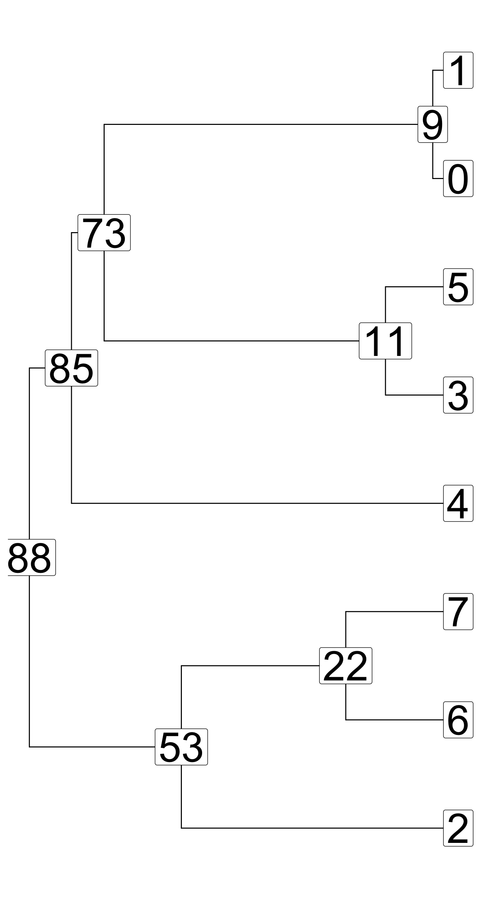
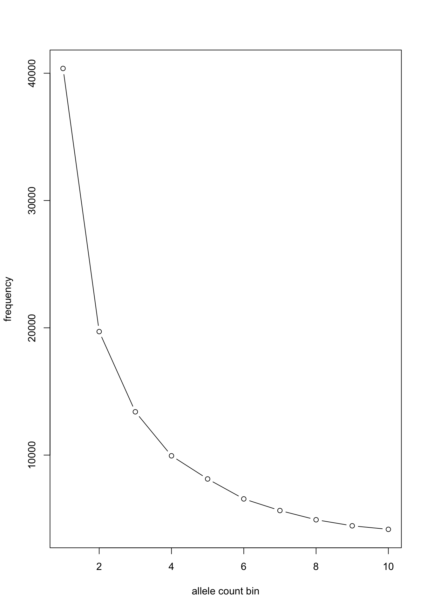
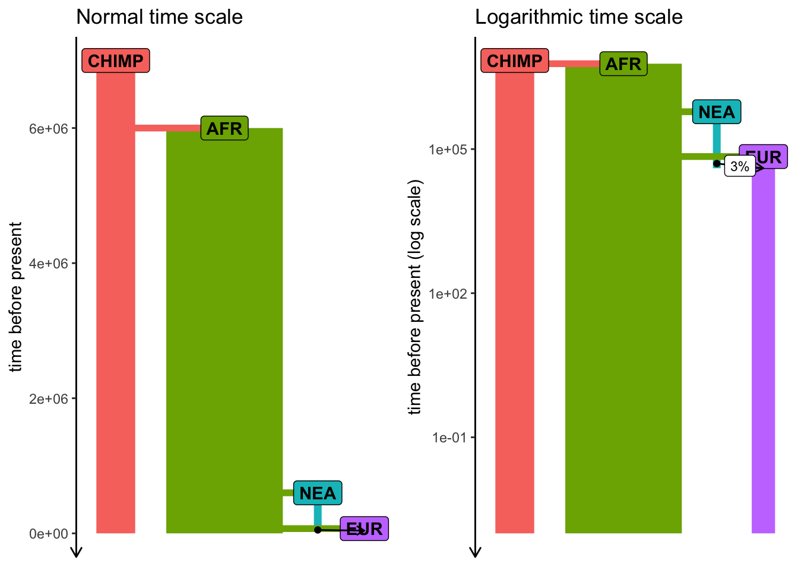
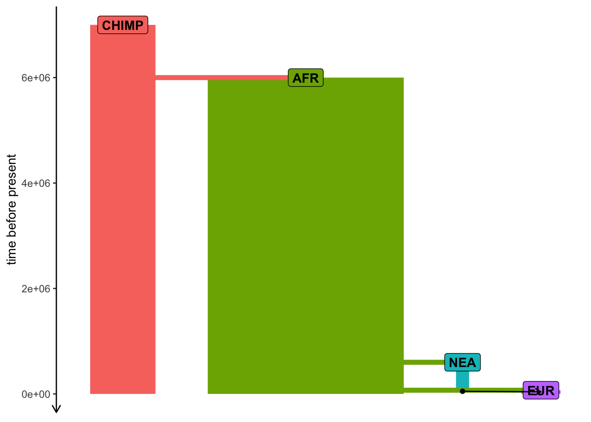

initialize() {
// create a neutral mutation type
initializeMutationType("m1", 0.5, "f", 0.0);
// initialize 1Mb segment
initializeGenomicElementType("g1", m1, 1.0);
initializeGenomicElement(g1, 0, 999999);
// set mutation rate and recombination rate of the segment
initializeMutationRate(1e-8);
initializeRecombinationRate(1e-8);
}
// create an ancestral population p1 of 10000 diploid individuals
1 early() { sim.addSubpop("p1", 10000); }
// in generation 1000, create two daughter populations p2 and p3
1000 early() {
sim.addSubpopSplit("p2", 5000, p1);
sim.addSubpopSplit("p3", 1000, p1);
}
// in generation 10000, stop the simulation and save 100 individuals
// from p2 and p3 to a VCF file
10000 late() {
p2_subset = sample(p2.individuals, 100);
p3_subset = sample(p3.individuals, 100);
c(p2_subset, p3_subset).genomes.outputVCF("/tmp/slim_output.vcf.gz");
sim.simulationFinished();
catn("DONE!");
}slendr simulations
practical workshop at MPI EVA Leipzig
Many problems in population genetics cannot be solved by a mathematician, no matter how gifted. [It] is already clear that computer methods are very powerful. This is good. It […] permits people with limited mathematical knowledge to work on important problems […]
Why use simulations?
- Making sense of estimated statistics
- Fitting model parameters
- Ground truth for method work
Making sense of estimated statistics

Making sense of estimated statistics

Making sense of estimated statistics

Fitting model parameters (i.e. ABC)

Image from Wikipedia on ABC
Ground truth for methods work

What does it mean to simulate a genome?
How would you design an algorithm for a popgen simulation?
Which minimal pieces are needed for the program to be useful?
If we want to simulate population genetics…
We need populations.
We need genetics.
A chromosome is…
…a linear sequence of nucleotides…
- a list of characters (A/G/C/T nucleotides)
- a list of 0 or 1 values (ancestral/derived allele)
A population is…
A collection of individuals at a given point in time.
Each carrying a pair of chromosomes inherited from parents.
OK. But let’s talk about “real” simulations.
There are many simulation tools
The most famous and widely used are SLiM and msprime.
Both are very powerful…
… but they require a lot of programming knowledge...
… and a lot of code for non-trivial simulations (🐛🪲🐜).
a convenient R interface to both SLiM and msprime.
SLiM
What is SLiM?
- Forward-time simulator
- It’s fully programmable!
- Massive library of functions for:
- Demographic events
- Various mating systems
- Selection, quantitative traits, …
- > 700 pages long manual!

SLiMgui – IDE for SLiM

Simple neutral simulation in SLiM
msprime
What is msprime?
What is msprime?
- A Python module for writing coalescent simulations
- Extremely fast (genome-scale, population-scale data)
- You must know Python fairly well to build complex models

Simple simulation using msprime
This is basically the same model as the SLiM script earlier:
import msprime
demography = msprime.Demography()
demography.add_population(name="A", initial_size=10_000)
demography.add_population(name="B", initial_size=5_000)
demography.add_population(name="C", initial_size=1_000)
demography.add_population_split(time=1000, derived=["A", "B"], ancestral="C")
ts = msprime.sim_ancestry(
sequence_length=10e6,
recombination_rate=1e-8,
samples={"A": 100, "B": 100},
demography=demography
)source: link

www.slendr.net
Why a new package? – spatial simulations!

Why a new package?
Most researchers are not expert programmers
All but the most trivial simulations require lots of code
90%
of simulations are basically the same! create populations (splits and \(N_e\) changes)
specify if/how they should mix (rates and times)
save output (VCF, EIGENSTRAT)
- Lot of code duplication across projects
Let’s get started
We will need slendr & tidyverse
# load data analysis and plotting packages
library(dplyr)
Attaching package: 'dplyr'The following objects are masked from 'package:stats':
filter, lagThe following objects are masked from 'package:base':
intersect, setdiff, setequal, unionlibrary(ggplot2)
library(magrittr)
# load slendr itself
library(slendr)=======================================================================
NOTE: Due to Python setup issues on some systems which have been
causing trouble particularly for novice users, calling library(slendr)
no longer activates slendr's Python environment automatically.
In order to use slendr's msprime back end or its tree-sequence
functionality, users must now activate slendr's Python environment
manually by executing init_env() after calling library(slendr).
(This note will be removed in the next major version of slendr.)
=======================================================================
Attaching package: 'slendr'The following object is masked from 'package:magrittr':
subtractinit_env()The interface to all required Python modules has been activated.(ignore the message about missing SLiM)
slendr haiku
Build simple models,
simulate data from them.
Just one plain R script.
Typical steps (outline of this tutorial)
- creating populations
- scheduling population splits
- programming \(N_e\) size changes
- encoding gene-flow events
- simulation sequence of a given size
- computing statistics from simulated outputs
Creating a population()
Each needs a name, size and time of appearance (i.e., “split”):
pop1 <- population("pop1", N = 1000, time = 1)This creates a normal R object. Typing it gives a summary:
pop1slendr 'population' object
--------------------------
name: pop1
non-spatial population
stays until the end of the simulation
population history overview:
- time 1: created as an ancestral population (N = 1000)Programming population splits
Splits are indicated by the parent = <pop> argument:
pop2 <- population("pop2", N = 100, time = 50, parent = pop1)The split is reported in the “historical summary”:
pop2slendr 'population' object
--------------------------
name: pop2
non-spatial population
stays until the end of the simulation
population history overview:
- time 50: split from pop1 (N = 100)Scheduling resize events – resize()
Step size decrease:
Tidyverse-style pipe interface
A more concise way to express the same thing as before.
Step size decrease:
pop1 <-
population("pop1", N = 1000, time = 1) %>%
resize(N = 100, time = 500, how = "step")Exponential increase:
pop2 <-
population("pop2", N = 1000, time = 1) %>%
resize(N = 10000, time = 500, end = 2000, how = "exponential")A more complex model
pop1 <- population("pop1", N = 1000, time = 1)
pop2 <-
population("pop2", N = 1000, time = 300, parent = pop1) %>%
resize(N = 100, how = "step", time = 1000)
pop3 <-
population("pop3", N = 1000, time = 400, parent = pop2) %>%
resize(N = 2500, how = "step", time = 800)
pop4 <-
population("pop4", N = 1500, time = 500, parent = pop3) %>%
resize(N = 700, how = "exponential", time = 1200, end = 2000)
pop5 <-
population("pop5", N = 100, time = 600, parent = pop4) %>%
resize(N = 50, how = "step", time = 900) %>%
resize(N = 250, how = "step", time = 1200) %>%
resize(N = 1000, how = "exponential", time = 1600, end = 2200) %>%
resize(N = 400, how = "step", time = 2400)Remember that slendr objects carry their history
pop5slendr 'population' object
--------------------------
name: pop5
non-spatial population
stays until the end of the simulation
population history overview:
- time 600: split from pop4 (N = 100)
- time 900: resize from 100 to 50 individuals
- time 1200: resize from 50 to 250 individuals
- time 1600-2200: exponential resize from 250 to 1000 individuals
- time 2400: resize from 1000 to 400 individualsLast step before simulation: compile_model()
model <- compile_model(
list(pop1, pop2, pop3, pop4, pop5),
generation_time = 1,
simulation_length = 3000
)The model is also compiled to disk which gives a nice additional layer of reproducibility. The exact location can be specified via path = argument to compile_model().
Model summary
Typing the compiled model prints a brief summary:
modelslendr 'model' object
---------------------
populations: pop1, pop2, pop3, pop4, pop5
geneflow events: [no geneflow]
generation time: 1
time direction: forward
total running length: 3000 model time units
model type: non-spatial
configuration files in: /private/var/folders/d_/hblb15pd3b94rg0v35920wd80000gn/T/RtmpjACFJv/filef7b1674f1fdc Model visualization
pop1 <- population("pop1", N = 1000, time = 1)
pop2 <-
population("pop2", N = 1000, time = 300, parent = pop1) %>%
resize(N = 100, how = "step", time = 1000)
pop3 <-
population("pop3", N = 1000, time = 400, parent = pop2) %>%
resize(N = 2500, how = "step", time = 800)
pop4 <-
population("pop4", N = 1500, time = 500, parent = pop3) %>%
resize(N = 700, how = "exponential", time = 1200, end = 2000)
pop5 <-
population("pop5", N = 100, time = 600, parent = pop4) %>%
resize(N = 50, how = "step", time = 900) %>%
resize(N = 250, how = "step", time = 1200) %>%
resize(N = 1000, how = "exponential", time = 1600, end = 2200) %>%
resize(N = 400, how = "step", time = 2400)
model <- compile_model(
list(pop1, pop2, pop3, pop4, pop5),
generation_time = 1,
simulation_length = 3000
)Model visualization
plot_model(model)
Exercise #1
Exercise #1 — write your own model!
You can use this “template”:
library(slendr)
init_env()
chimp <- population(...)
# <... rest of your code ...>
model <- compile_model(
populations = list(chimp, ...),
generation_time = 30
)
plot_model(model) # verify visually
Don’t worry about gene flow just yet. We will add that at a later stage.
Feel free to include expansions and contractions (maybe in EUR at some point?).
Exercise #1 — solution
Simulating data (finally…)
We have a compiled model, how do we simulate data?
slendr has two built-in simulation engines:
- SLiM engine
- msprime engine
You don’t have to write any msprime or SLiM code!
This is all that’s needed:
ts <- msprime(model, sequence_length = 100e6, recombination_rate = 1e-8)ts is a so-called tree sequence)
The output of a slendr simulation is a tree sequence
What is tree sequence?

- a record of full genetic ancestry of a set of samples
- an encoding of DNA sequence carried by those samples
- an efficient analysis framework
Why tree sequence?
Why not VCF, EIGENSTRAT, or a genotype table?
What we usually have

What we usually want
(As full as possible) a representation of our samples’ history:
Tree sequences are also very efficient
Let’s take this minimalistic model:
pop <- population("pop", time = 1e6, N = 10000)
model <- compile_model(pop, generation_time = 30, direction = "backward")
ts <- msprime(model, sequence_length = 1e6, recombination_rate = 1e-8)(simulates 2 \(\times\) 10000 chromosomes of 100 Mb)
Runs in less than 30 seconds on my laptop!
Taking about 66 Mb of memory!
How does this work?!

Tree-sequence tables (tskit docs)
A tree (sequence) can be represented by
- a table of nodes,
- a table of edges between nodes,
- a table of mutations on edges

A set of such tables is a tree sequence.
Tree-sequence tables in practice
ggtree v3.6.2 For help: https://yulab-smu.top/treedata-book/
If you use the ggtree package suite in published research, please cite
the appropriate paper(s):
Guangchuang Yu, David Smith, Huachen Zhu, Yi Guan, Tommy Tsan-Yuk Lam.
ggtree: an R package for visualization and annotation of phylogenetic
trees with their covariates and other associated data. Methods in
Ecology and Evolution. 2017, 8(1):28-36. doi:10.1111/2041-210X.12628
Shuangbin Xu, Lin Li, Xiao Luo, Meijun Chen, Wenli Tang, Li Zhan, Zehan
Dai, Tommy T. Lam, Yi Guan, Guangchuang Yu. Ggtree: A serialized data
object for visualization of a phylogenetic tree and annotation data.
iMeta 2022, 4(1):e56. doi:10.1002/imt2.56
Guangchuang Yu. Using ggtree to visualize data on tree-like structures.
Current Protocols in Bioinformatics. 2020, 69:e96. doi:10.1002/cpbi.96
Attaching package: 'ggtree'The following object is masked from 'package:magrittr':
inset
. . .
nodes:
node_id pop_id time
1 88 0 -348.38998
2 85 0 -19.46493
3 73 0 235.58011. . .
edges:
child_node_id parent_node_id
1 85 88
2 73 85
3 53 88. . .
mutations:
[1] id site node time
<0 rows> (or 0-length row.names)Let’s take the model we defined earlier…

… and simulate tree sequence from it
ts <- msprime(model, sequence_length = 1e6, recombination_rate = 1e-8)ts_save().)
If we type ts into an R console, we get…
A tree-sequence content summary
ts╔═══════════════════════════╗
║TreeSequence ║
╠═══════════════╤═══════════╣
║Trees │ 1450║
╟───────────────┼───────────╢
║Sequence Length│ 1000000║
╟───────────────┼───────────╢
║Time Units │generations║
╟───────────────┼───────────╢
║Sample Nodes │ 9400║
╟───────────────┼───────────╢
║Total Size │ 1.6 MiB║
╚═══════════════╧═══════════╝
╔═══════════╤═════╤═════════╤════════════╗
║Table │Rows │Size │Has Metadata║
╠═══════════╪═════╪═════════╪════════════╣
║Edges │24445│763.9 KiB│ No║
╟───────────┼─────┼─────────┼────────────╢
║Individuals│ 4700│128.5 KiB│ No║
╟───────────┼─────┼─────────┼────────────╢
║Migrations │ 0│ 8 Bytes│ No║
╟───────────┼─────┼─────────┼────────────╢
║Mutations │ 0│ 16 Bytes│ No║
╟───────────┼─────┼─────────┼────────────╢
║Nodes │19989│546.6 KiB│ No║
╟───────────┼─────┼─────────┼────────────╢
║Populations│ 5│383 Bytes│ Yes║
╟───────────┼─────┼─────────┼────────────╢
║Provenances│ 1│ 3.8 KiB│ No║
╟───────────┼─────┼─────────┼────────────╢
║Sites │ 0│ 16 Bytes│ No║
╚═══════════╧═════╧═════════╧════════════╝What can we do with it?
slendr’s R interface to tskit

This R interface links to Python methods implemented in tskit.
Here is the magic
Tree sequences make it possible to directly compute many quantities of interest without going via conversion to a genotype table/VCF!
In fact, we don’t even need mutations!
ts╔═══════════════════════════╗
║TreeSequence ║
╠═══════════════╤═══════════╣
║Trees │ 1450║
╟───────────────┼───────────╢
║Sequence Length│ 1000000║
╟───────────────┼───────────╢
║Time Units │generations║
╟───────────────┼───────────╢
║Sample Nodes │ 9400║
╟───────────────┼───────────╢
║Total Size │ 1.6 MiB║
╚═══════════════╧═══════════╝
╔═══════════╤═════╤═════════╤════════════╗
║Table │Rows │Size │Has Metadata║
╠═══════════╪═════╪═════════╪════════════╣
║Edges │24445│763.9 KiB│ No║
╟───────────┼─────┼─────────┼────────────╢
║Individuals│ 4700│128.5 KiB│ No║
╟───────────┼─────┼─────────┼────────────╢
║Migrations │ 0│ 8 Bytes│ No║
╟───────────┼─────┼─────────┼────────────╢
║Mutations │ 0│ 16 Bytes│ No║
╟───────────┼─────┼─────────┼────────────╢
║Nodes │19989│546.6 KiB│ No║
╟───────────┼─────┼─────────┼────────────╢
║Populations│ 5│383 Bytes│ Yes║
╟───────────┼─────┼─────────┼────────────╢
║Provenances│ 1│ 3.8 KiB│ No║
╟───────────┼─────┼─────────┼────────────╢
║Sites │ 0│ 16 Bytes│ No║
╚═══════════╧═════╧═════════╧════════════╝How can we compute statistics?
There is a duality between mutations and branch lengths in trees (more here).
But what if we want mutations?
Coalescent and mutation processes can be decoupled!
This means we can add mutations
after the simulation.
This allows efficient, massive simulations
If we have a simulated ts object, we can do:
ts_mutated <- ts_mutate(ts, mutation_rate = 1e-8)Or, with a shortcut:
ts <-
msprime(model, sequence_length = 100e6, recombination_rate = 1e-8) %>%
ts_mutate(mutation_rate = 1e-8 )ts_mutate() throughout.
How do we use tree sequences in practice?
First, to analyze data, we need to be able to refer to “samples”.
Extracting sample information
Each “sampled” individual in slendr has a symbolic name, a sampling time, and a population assignment.

Extracting sample information
If we have a tree sequence ts, we can get samples with ts_samples():
ts_samples(ts)# A tibble: 4,700 × 3
name time pop
<chr> <dbl> <chr>
1 pop1_1 0 pop1
2 pop1_2 0 pop1
3 pop1_3 0 pop1
4 pop1_4 0 pop1
5 pop1_5 0 pop1
6 pop1_6 0 pop1
7 pop1_7 0 pop1
8 pop1_8 0 pop1
9 pop1_9 0 pop1
10 pop1_10 0 pop1
# … with 4,690 more rows
ts_samples(ts) %>% count(pop)# A tibble: 5 × 2
pop n
<chr> <int>
1 pop1 1000
2 pop2 100
3 pop3 2500
4 pop4 700
5 pop5 400Analyzing tree sequences with slendr
Let’s say we have the following model and we simulate a tree sequence from it.
Example: allele frequency spectrum
# sample 5 individuals
# (i.e. 10 chromosomes)
samples <-
ts_samples(ts) %>%
sample_n(5) %>%
pull(name)
# compute allele frequency
# spectrum from the given set
# of individuals
afs1 <- ts_afs(
ts, list(samples),
mode = "branch",
polarised = TRUE,
span_normalise = TRUE
)
afs1 [1] 40374.890 19702.927 13400.619 9944.322 8124.764 6557.752 5643.803
[8] 4919.553 4444.428 4166.190
plot(afs1, type = "b",
xlab = "allele count bin",
ylab = "frequency")
Example: allele frequency spectrum
# sample 5 individuals
# (i.e. 10 chromosomes)
samples <-
ts_samples(ts) %>%
sample_n(5) %>%
pull(name)
# compute allele frequency
# spectrum from the given set
# of individuals
afs2 <- ts_afs(
ts, list(samples),
polarised = TRUE
)
afs2 [1] 0 0 0 0 0 0 0 0 0 0
plot(afs2, type = "b",
xlab = "allele count bin",
ylab = "frequency")
lines(afs1, type = "b", col = "red")
legend("topright", legend = c("mutation-based AFS", "theoretical branch-based AFS"),
fill = c("black", "red"))
Exercise #2
Exercise #2 — estimating \(N_e\) from AFS
You sequenced 10 individuals from one population and computed this AFS (counts of singletons, doubletons, …):
afs_observed <- c(2520, 1449, 855, 622, 530, 446, 365, 334, 349, 244,
264, 218, 133, 173, 159, 142, 167, 129, 125, 143)You know from fossil evidence that the population had constant \(N_e\) for the past 100,000 generations, and that the \(N_e\) was somewhere between 1000 and 30000.
Use slendr to guess the true value of \(N_e\) given the observed AFS by running single-population simulations of different \(N_e\) and comparing ts_afs() results to afs_observed.
Exercise #2 – hints
Write an R function (in a new script) that gets \(N_e\) as input, creates a slendr population, compiles a model, simulates a tree sequence, runs
ts_afs()on it, and returns the AFS.Find the \(N_e\) value that will give the closest AFS to the observed one. For instance, you could:
a ) Plot simulated AFS for different \(N_e\) with the AFS and just eyeball \(N_e\) value that looks correct from a graph.
b ) Simulate AFS automatically in steps of possible \(N_e\) values and find the closest matching one.
Exercise #2 solution (a) – eye-balling
Exercise #2 solution (b) – grid
Gene flow / admixture
gene_flow() events
Gene flow is programmed the gene_flow() function.
If we have populations p1 and p2, we schedule gene flow with:
gf <- gene_flow(from = p1, to = p2, start = 500, end = 600, rate = 0.13)Multiple gene-flow events can be gathered in a list:
gf <- list(
gene_flow(from = p1, to = p2, start = 500, end = 600, rate = 0.13),
gene_flow(from = <..>, to = <..>, start = <...>, end = <...>, rate = <...>),
< potentially many more ... >
)gene_flow() checks for consistency!
Exercise #3
Exercise #3 — adding gene_flow()
Add some gene-flow events into your model from Exercise #1.

Exercise #3 — adding gene_flow()
Add some gene-flow events into your model from Exercise #1.

Exercise 4
Exercise #4 — popgen statistics
plot_model(model)
Exercise #4 — popgen statistics
Compute nucleotide diversity (\(\pi\)) in each population (ts_diversity()). Do your results with known \(N_e\) values?
Compute ts_divergence() (genetic divergence) or ts_fst() (\(F_{ST}\)) between populations. Do the results match the model?
Compute the “outgroup \(f_3\)” using CHIMP as the outgroup (ts_f3()) for different pairs of “A” and “B” populations.
Test Neanderthal introgression in EUR using the \(f_4\) statistic (ts_f4()). [hint: \(f_4\)(AFR, EUR; NEAND, CHIMP)]
Exercise #4 — popgen statistics
A useful R trick for handling recorded samples:
ts_samples(ts)# A tibble: 24,000 × 3
name time pop
<chr> <dbl> <chr>
1 AFR_1 0 AFR
2 AFR_2 0 AFR
3 AFR_3 0 AFR
4 AFR_4 0 AFR
5 AFR_5 0 AFR
6 AFR_6 0 AFR
7 AFR_7 0 AFR
8 AFR_8 0 AFR
9 AFR_9 0 AFR
10 AFR_10 0 AFR
# … with 23,990 more rowssamples <- ts_samples(ts) %>%
split(., .$pop) %>%
lapply(pull, "name")str(samples)List of 4
$ AFR : chr [1:15000] "AFR_1" "AFR_2" "AFR_3" "AFR_4" ...
$ CHIMP: chr [1:5000] "CHIMP_1" "CHIMP_2" "CHIMP_3" "CHIMP_4" ...
$ EUR : chr [1:3000] "EUR_1" "EUR_2" "EUR_3" "EUR_4" ...
$ NEA : chr [1:1000] "NEA_1" "NEA_2" "NEA_3" "NEA_4" ...Time-series data
Sampling aDNA samples through time
Imagine we have pop1, pop2, … compiled in a model.
To record ancient individuals in the tree sequence, we can use schedule_sampling() like this:
schedule_sampling(
model, # compiled slendr model object
times = c(100, 500), # at these times (can be also a single number) ...
list(pop1, 42), # ... sample 42 individuals from pop1
list(pop2, 10), # ... sample 10 individuals from pop2
list(pop3, 1) # ... sample 1 individual from pop 3
) Enforcing timing correctness
schedule_sampling() will only perform sampling from a population if it exists at that time.
For instance, we can’t sample modern human from 1 Mya:
schedule_sampling(
model,
times = 1e6, # can't sample EUR
list(eur, 1) # individual at 1 Mya!
) Warning message: No valid sampling events were retained
Sampling schedule format
The output of schedule_sampling() is a plain data frame!
schedule_sampling(model, times = c(40000, 30000, 20000, 10000), list(eur, 1))# A tibble: 4 × 7
time pop n y_orig x_orig y x
<int> <chr> <int> <lgl> <lgl> <lgl> <lgl>
1 10000 EUR 1 NA NA NA NA
2 20000 EUR 1 NA NA NA NA
3 30000 EUR 1 NA NA NA NA
4 40000 EUR 1 NA NA NA NA We can bind multiple sampling schedules together, giving us finer control about sampling:
eur_samples <- schedule_sampling(model, times = c(40000, 30000, 20000, 10000, 0), list(eur, 1))
afr_samples <- schedule_sampling(model, times = 0, list(afr, 1))
samples <- bind_rows(eur_samples, afr_samples)How to use a sampling schedule?
To sample individuals based on a given schedule, we use the samples = argument of the msprime() functions:
ts <- msprime(model, samples = samples, sequence_length = 1e6, recombination_rate = 1e-8) %>%
ts_mutate(mutation_rate = 1e-8)We can verify that only specific individuals are recorded:
ts_samples(ts)# A tibble: 6 × 3
name time pop
<chr> <dbl> <chr>
1 EUR_1 40000 EUR
2 EUR_2 30000 EUR
3 EUR_3 20000 EUR
4 EUR_4 10000 EUR
5 AFR_1 0 AFR
6 EUR_5 0 EUR ts╔═══════════════════════════╗
║TreeSequence ║
╠═══════════════╤═══════════╣
║Trees │ 1331║
╟───────────────┼───────────╢
║Sequence Length│ 1000000║
╟───────────────┼───────────╢
║Time Units │generations║
╟───────────────┼───────────╢
║Sample Nodes │ 12║
╟───────────────┼───────────╢
║Total Size │ 289.8 KiB║
╚═══════════════╧═══════════╝
╔═══════════╤════╤═════════╤════════════╗
║Table │Rows│Size │Has Metadata║
╠═══════════╪════╪═════════╪════════════╣
║Edges │4085│127.7 KiB│ No║
╟───────────┼────┼─────────┼────────────╢
║Individuals│ 6│192 Bytes│ No║
╟───────────┼────┼─────────┼────────────╢
║Migrations │ 0│ 8 Bytes│ No║
╟───────────┼────┼─────────┼────────────╢
║Mutations │1649│ 59.6 KiB│ No║
╟───────────┼────┼─────────┼────────────╢
║Nodes │ 945│ 25.8 KiB│ No║
╟───────────┼────┼─────────┼────────────╢
║Populations│ 4│341 Bytes│ Yes║
╟───────────┼────┼─────────┼────────────╢
║Provenances│ 2│ 3.5 KiB│ No║
╟───────────┼────┼─────────┼────────────╢
║Sites │1647│ 40.2 KiB│ No║
╚═══════════╧════╧═════════╧════════════╝Exercise #5
Exercise #5a — ancient samples

Exercise #5a — ancient samples
Simulate a new data set from your model, but this time specify a sampling schedule:
- one present-day CHIMP and AFR individual
- 20 present-day EUR individuals
- 1 NEA at 70 ky, 1 NEA at 40 ky
- 1 EUR every 1000 years between 50-5 kya
Reminder: you can do this by:
samples <- # rbind(...) together individual sampling schedule data frames
ts <-
msprime(model, samples = samples, sequence_length = 100e6, recombination_rate = 1e-8) %>%
ts_mutate(mutation_rate = 1e-8)Exercise #5b — \(f_4\)-ratio statistic
Use \(f_4\)-ratio statistic to replicate the following figure:
Hint: You can compute Neanderthal ancestry for a vector of individuals X as ts_f4ratio(ts, X = X, "NEA_1", "NEA_2", "AFR_1", "CHIMP_1").
Exercise #5 — solution
BONUS CONTENT
Conversion to other genotype formats
If you have a tree-sequence object ts…
ts_vcf(ts, path = "path/to/a/file.vcf.gz")ts_eigenstrat(ts, prefix = "path/to/eigenstrat/prefix")ts_genotypes(ts)1 multiallelic sites (0.072% out of 1390 total) detected and removed# A tibble: 1,389 × 7
pos EUR_1_chr1 EUR_1_chr2 EUR_2_chr1 EUR_2_chr2 AFR_1_chr1 AFR_1_chr2
<int> <int> <int> <int> <int> <int> <int>
1 1001 0 1 0 0 1 0
2 1389 0 1 0 0 1 0
3 2425 0 1 0 0 1 0
4 4345 1 0 1 1 0 1
5 5130 0 0 0 0 1 0
6 7057 1 0 1 1 1 1
7 7962 1 1 1 1 1 1
8 9380 1 1 1 1 1 1
9 9752 0 0 0 0 0 1
10 11235 1 0 1 1 1 1
# … with 1,379 more rows